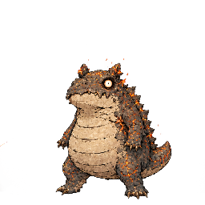
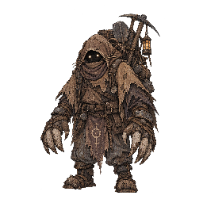
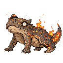
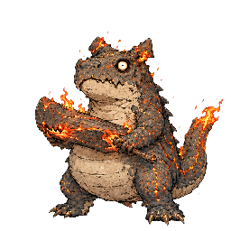

みず
- 捕獲率
- 120
- 経験値
- 10
進化
進化先
 Torrent Turtleレベル進化
Torrent Turtleレベル進化覚える技
| 習得 | 技 | タイプ | 威力 | 命中 | PP | 分類 |
|---|---|---|---|---|---|---|
| Lv.1 | Scratch | ノーマル | 40 | 100 | 35 | 物理 |
| Lv.2 | Water Pistol | みず | 40 | 100 | 25 | 特殊 |
| Lv.3 | Harden | ノーマル | 0 | 100 | 30 | 変化 |
| Lv.4 | Raging Water | みず | 70 | 80 | 15 | 特殊 |
| Lv.5 | Waterfall | みず | 80 | 100 | 15 | 物理 |
| Lv.7 | Bubble Ray | みず | 65 | 100 | 20 | 特殊 |
| Lv.9 | Powerful Water Pump | みず | 110 | 80 | 5 | 特殊 |
| Lv.10 | Smack with Pincers | みず | 100 | 90 | 10 | 物理 |
カウンターできる相手

Blazing Lizardタイプ一致の弱点攻撃Powerful Water Pump（みず）で弱点2倍（ほか5件）

Dirt Burrowerタイプ一致の弱点攻撃Powerful Water Pump（みず）で弱点2倍（ほか5件）

Fire Lizardタイプ一致の弱点攻撃Powerful Water Pump（みず）で弱点2倍（ほか5件）

Flame Lizardタイプ一致の弱点攻撃Powerful Water Pump（みず）で弱点2倍（ほか5件）
 Rock Armorタイプ一致の弱点攻撃
Rock Armorタイプ一致の弱点攻撃Powerful Water Pump（みず）で弱点2倍（ほか5件）
カウンターされる相手
 Blooming Frogタイプ一致の弱点攻撃
Blooming Frogタイプ一致の弱点攻撃Gather Light（くさ）で弱点2倍（ほか3件）
 Charged Mouseタイプ一致の弱点攻撃
Charged Mouseタイプ一致の弱点攻撃Huge Thunder（でんき）で弱点2倍（ほか3件）
 Green Frogタイプ一致の弱点攻撃
Green Frogタイプ一致の弱点攻撃Gather Light（くさ）で弱点2倍（ほか3件）
 Leaping Frogタイプ一致の弱点攻撃
Leaping Frogタイプ一致の弱点攻撃Gather Light（くさ）で弱点2倍（ほか3件）
 Yellow Mouseタイプ一致の弱点攻撃
Yellow Mouseタイプ一致の弱点攻撃Electric Shock（でんき）で弱点2倍（ほか1件）
登場するモンスター構成
- V2 ドラフト スターター
変更履歴
sha256:861a6eeeb…表示中初回記録
sha256:d066f6bc5…初回記録